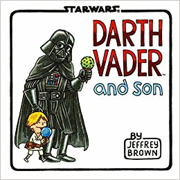
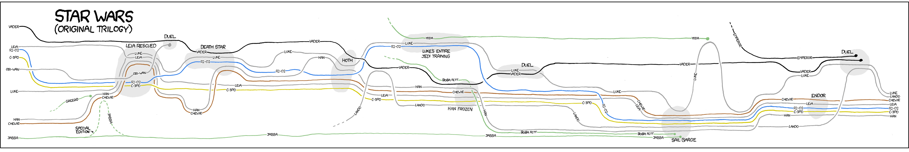
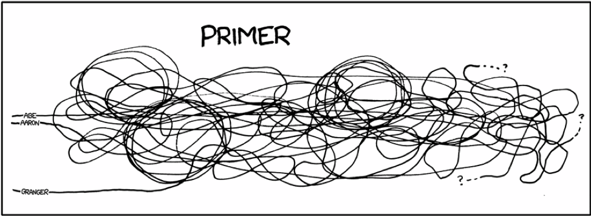

Let's pretend you're a software engineer
Senior Jawa Developer
new feature
a service to upload translations to ci
ci-3po
awesome.
Your teammate just finished a tool to convert resources into d3 visualizations in jawa
r2d3
let's make them work together
oh dear
They're tangled together
Tear them apart to start over
They were `Tightly Coupled`: Unrelated, but inseparable
What you wanted was `Cohesion`
Related things nearby.
Benefits of High Cohesion
Enables reuse (e.g., MVC)
Minimizes refactorings
Makes things easier to test
Enables Separation of Concerns
High Cohesion: Make things easy to understand
source: http://xkcd.com/657/
source: http://xkcd.com/657/
What leads to High Cohesion?
Using SOLID
Martin Fowler
not the only advocate
tightly coupled code is unmockable
Google Testability Team Testable Software Principles
Jonathan Wolter, Russ Ruffer, Miško Hevery
Allen Holub